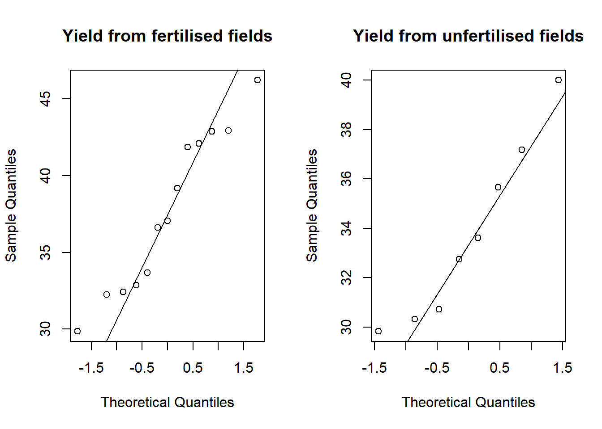
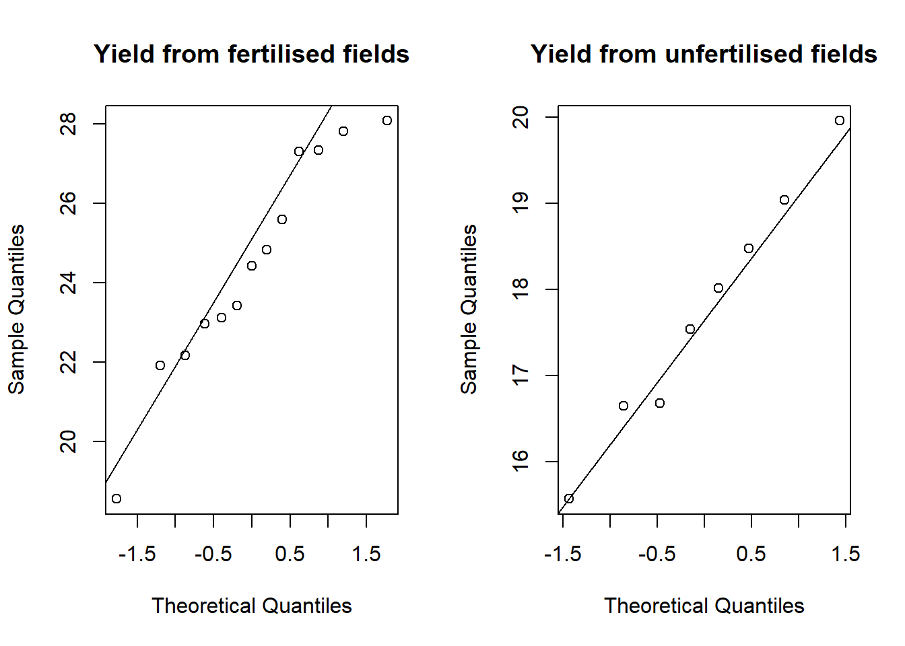

3 Difference in Population Means
When we have two independent random variables which both follow normal distributions, say \(X\sim N(\mu_X,\,\sigma_X)\) and \(Y\sim N(\mu_Y,\,\sigma_Y)\), it is often of interest to find a range of values for the difference between the population means, \(\mu_X\) and \(\mu_Y\). This range of values can be found using a confidence interval for \(\mu_X-\mu_Y\), but we have to be aware of the variances of both distributions, as this can change the way the confidence interval is calculated.
In order to construct confidence intervals, random samples have to be drawn from the underlying distribution. We will use the notation \(n_X\) to denote the size of the sample drawn from \(X\sim N(\mu_X,\,\sigma_X)\) and \(n_Y\) to denote the size of the sample drawn from \(Y\sim N(\mu_Y,\,\sigma_Y)\). Let \(x_1, x_2, \ldots , x_{n_X}\) with sample mean \(\bar{x}\) and sample variance \(s^2_X\) represent the sample from \(X\sim N(\mu_X,\,\sigma_X)\) and \(y_1, y_2, \ldots , y_{n_Y}\) with sample mean \(\bar{y}\) and sample variance \(s^2_Y\) represent the sample from \(Y\sim N(\mu_Y,\,\sigma_Y)\).
3.1 Variances are known and equal (8.2.3)
In the case where the variances of both distributions are known and are equal, that is \(\sigma_X^2=\sigma_Y^2=\sigma^2\), then a \((1-\alpha)\cdot100\%\) confidence interval for the difference in the population means, \(\mu_X-\mu_Y\), is given by equation (8.11) in the textbook,
\[\begin{equation} CI_{1-\alpha}(\mu_X-\mu_Y)=\left[\left(\bar x-\bar y\right)-z_{1-\frac{\alpha}{2}}\cdot\sigma\sqrt{\frac{1}{n_X}+\frac{1}{n_Y}},\,\,\left(\bar x-\bar y\right)+z_{1-\frac{\alpha}{2}}\cdot\sigma\sqrt{\frac{1}{n_X}+\frac{1}{n_Y}}\,\right] \end{equation}\]
Let's consider an example where we can use this result.
Suppose a farmer is interested in whether a specific fertiliser will increase their annual yield of potatoes. They apply the new fertiliser to 13 of the fields they are growing potatoes in and measure the yield (in tonnes) from each field. They also measure the yield of potatoes from 8 fields where the fertiliser was not applied. Assuming that the yield of potatoes, regardless of whether fertiliser was used, has a standard deviation of 4, find a 95% confidence interval for the mean difference in the yield of potatoes from the fertilised fields and the unfertilised fields.
The observed yields can be found in the file yields.csv.
Before we can start to calculate this confidence interval, there are a few steps we need to take.
- Read the data frame into R.
- Split it into two subsets, one for the fertilised fields and one for the unfertilised fields.
- Double check that the potato yield for these two groups follows a normal distribution, so that we can use the result above.
To read yields.csv into R, you will first need to download it from Moodle and save it somewhere accessible. Then set your working directory in R to point to wherever you have saved this file. For a reminder on setting your working directory, see Lab 3 Section 2.1.
To load the data frame into the Environment tab and call it yields, we can use the code below.
It is always good practise to open the original file to check for missing values and the column headings for example. Make sure to check that the data frame is saved as you would expect, based on this. Once you have read yields into your R session, we should explore its contents.
| fertiliser | potato | lettuce | supermarket |
|---|---|---|---|
| Used | 36.62601 | 27.82845 | 1 |
| Used | 37.05237 | 24.83388 | 0 |
| Not used | 33.60988 | 19.04274 | 1 |
| Used | 42.93379 | 24.42769 | 0 |
| Not used | 29.82898 | 18.01841 | 1 |
| Used | 42.08214 | 23.41676 | 1 |
We can see that there are 4 columns in yields,
fertiliser: this is a categorical variable stating whether fertiliser was used or not in the field.potato: this is yield (in tonnes) of potatoes harvested from each field.lettuce: this is the yield (in tonnes) of lettuces harvested from each field - we'll use this data later in the lab.supermarket: this is a binary variable indicating whether the yield of potatoes from each field has been sold to supermarkets or not - this will be used later on.
Because fertiliser is a column of categorical data, we should switch it to be a factor.
Now we can set up two distinct subsets from the data frame. potato_fertilised stores the yields from the fields where fertiliser was used and potato_unfertilised stores the yields from the fields where fertiliser was not used.
potato_fertilised <- subset(x = yields, subset = (fertiliser == "Used"),
select = potato, drop = TRUE)
potato_unfertilised <- subset(x = yields, subset = (fertiliser == "Not used"),
select = potato, drop = TRUE)We know from the question that these yields come from two distributions which both have a standard deviation equal to 4, but before we can find a confidence interval for the difference between the mean yield from fertilised and unfertilised fields, we need to confirm that the underlying distributions are normal. We can do this by creating a QQ plot for both subsets (for a reminder of QQ plots, see Lab 4 Section 4.3).
par(mfrow = c(1, 2))
qqnorm(y = potato_fertilised,
main = "Yield from fertilised fields")
qqline(y = potato_fertilised)
qqnorm(y = potato_unfertilised,
main = "Yield from unfertilised fields")
qqline(y = potato_unfertilised)
par(mfrow = c(1, 1))
These QQ plots seem to suggest that both groups follow a normal distribution, so it is reasonable for us to assume that the yield of potatoes coming from fertilised fields comes from a \(N(\mu_{\mbox{f}}, 4)\) distribution, and that the yield of potatoes coming from unfertilised fields comes from a \(N(\mu_{\mbox{uf}}, 4)\) distribution.
Now we are ready to actually compute this 95% confidence interval for the difference in population mean yields from the two types of field, that is \(\mu_\mbox{f}-\mu_\mbox{uf}\). There are a few different ways we could do this in R.
In order to use the formula for the confidence interval stated above, there are a few values we need to find. From the question, we already know that \(\sigma=4\), \(n_X=13\) and \(n_Y=8\). We can save these values in R using the code below.
That leaves us to find \(\bar x\), \(\bar y\) and \(z_{1-\frac{\alpha}{2}}\), the \((1-\frac{\alpha}{2})\)th quantile from the standard normal distribution. In our case, because we are interested in a 95% confidence interval, \(\alpha=0.05\), so we are looking for the \(\left(1-\frac{0.05}{2}\right)=0.975\)th quantile.
We can find these three values in R using the code below.
Now we can see in the Environment tab that \(\bar x=37.68\) tonnes, \(\bar y=33.76\) tonnes and \(z_{0.975}=1.96\).
Calculating the 95% confidence interval is now just a case of subbing in all the values into the formula shown above. We can do this in R as follows.
[1] 0.4043094 7.4501215Using c(-1, 1) allows us to find the lower and upper limit of the confidence interval in one easy step. We would interpret this confidence interval by saying that we are 95% confident that the difference between the average yields of potatoes from fertilised and unfertilised fields lies in the interval \(\left[0.4043,\, 7.4501\right]\).
Exactly the same result can be reached by using the function z.test(). This function runs through all the steps we manually calculated in the section above, so can speed up the process of finding a confidence interval. This function is part of the PASWR2 package, so we need to load it into the R session. z.test() can take the following arguments,
x =: this is a vector containing the sample data taken from the first normal distribution.y =: this is a vector containing the sample data taken from the second normal distribution.sigma.x =: this is the standard deviation of the first normal distribution.sigma.y =: this is the standard deviation of the second normal distribution.conf.level =: the is the confidence level for the desired interval. It needs to be put in as a decimal, so for a 95% confidence interval, we would use0.95for example.
The code below uses z.test() to find the 95% confidence interval for the difference in population mean potato yield from fertilised and unfertilised fields. We use $conf at the end of the function to extract only the confidence interval. z.test() by itself will return additional results.
library(PASWR2)
z.test(x = potato_fertilised, y = potato_unfertilised,
sigma.x = 4, sigma.y = 4, conf.level = 0.95)$conf[1] 0.4043094 7.4501215
attr(,"conf.level")
[1] 0.95Again, we would interpret this confidence interval by saying that we are 95% confident that the difference between the average yields of potatoes from fertilised and unfertilised fields lies in the interval \(\left[0.4043,\, 7.4501\right]\).
Another function contained in the PASWR2 package that can be useful is the zsum.test() function. This allows you to calculate the same confidence interval, but rather than inputting the data from the sample itself, you input some summary statistics that you have either calculated or have been given to you as part of the question. zsum.test() is a good function to use if you are not given the data from the samples aas part of a question, but rather some already calculated summary statistics.
The arguments that zsum.test() can take are,
mean.x =: this is the mean of the first sample. We have already calculated \(\bar x\) and saved it asxbar.mean.y =: this is the mean of the second sample. We have already calculated \(\bar y\) and saved it asybar.sigma.x =: this is the standard deviation of the underlying normal distribution the first sample has been taken from. We know from the question that this is equal to 4 and we have saved it in the objectsigma.sigma.y =: this is the standard deviation of the underlying normal distribution the second sample has been taken from. We know from the question that this is equal to 4 and we have saved it in the objectsigma.n.x =: this is the size of the first sample. In the question this is \(n_X=13\) and this is already saved asnx.n.y =: this is the size of the second sample. In the question this is \(n_Y=8\) and this is already saved asny.conf.level =: this is the confidence level for the desired interval. It needs to be put in as a decimal, so for a 95% confidence interval, we would use0.95for example.
We can input all of these values as arguments in the zsum.test() function to find the 95% confidence interval for the difference in population mean yield of potatoes from the fertilised and unfertilised fields. Again, we use $conf at the end of the function to extract only the confidence interval.
zsum.test(mean.x = xbar, mean.y = ybar, sigma.x = sigma, sigma.y = sigma,
n.x = nx, n.y = ny, conf.level = 0.95)$conf[1] 0.4043094 7.4501215
attr(,"conf.level")
[1] 0.95This confidence interval tells us that we are 95% confident that the difference between the average yields of potatoes from fertilised and unfertilised fields lies in the interval \(\left[0.4043,\, 7.4501\right]\).
You can find the derivation of this result and some additional exercises in Section 8.2.3 of Probability and Statistics with R.
3.2 Variances are known and unequal (8.2.4)
In the case where the variances of both distributions are known and but are unequal, that is \(\sigma_X^2\neq\sigma_Y^2\), then a \((1-\alpha)\cdot100\%\) confidence interval for the difference in the population means, \(\mu_X-\mu_Y\), is given by equation (8.12) in the textbook,
\[\begin{equation} CI_{1-\alpha}(\mu_X-\mu_Y)=\left[\left(\bar x-\bar y\right)-z_{1-\frac{\alpha}{2}}\cdot\sqrt{\frac{\sigma_X^2}{n_X}+\frac{\sigma_Y^2}{n_Y}},\,\,\left(\bar x-\bar y\right)+z_{1-\frac{\alpha}{2}}\cdot\sqrt{\frac{\sigma_X^2}{n_X}+\frac{\sigma_Y^2}{n_Y}}\,\right] \end{equation}\]
The farmer from before is also interested in seeing whether the use of the fertiliser improves their yield of lettuces. They again fertilise 13 fields where lettuces are growing and record the yield (in tonnes) from these fields. 8 fields were left unfertilised and the lettuce yield from these was also recorded. These data are in the last column, called lettuce, of the data frame yields.
Assuming that the lettuce yield from fertilised fields comes from a distribution with standard deviation equal to 3 and the yield from unfertilised fields follows a distribution with standard deviation equal to 1, calculate a 95% confidence interval for the mean difference in the lettuce yield between these two types of field. Notice now that the standard deviations, and hence the variances, of these two groups are not equal.
Before we can find this confidence interval, we need to complete a couple of steps.
- Split the data into two subsets, one for the fertilised fields and one for the unfertilised fields.
- Check that the lettuce yield follows a normal distribution for both groups, so that we can use the result above.
Let's create the two subsets from the data frame.
lettuce_fertilised <- subset(x = yields, subset = (fertiliser == "Used"),
select = lettuce, drop = TRUE)
lettuce_unfertilised <- subset(x = yields, subset = (fertiliser == "Not used"),
select = lettuce, drop = TRUE)Now we can plot two QQ plots to check whether the lettuce yields appear to follow a normal distribution.
par(mfrow = c(1, 2))
qqnorm(y = lettuce_fertilised,
main = "Yield from fertilised fields")
qqline(y = lettuce_fertilised)
qqnorm(y = lettuce_unfertilised,
main = "Yield from unfertilised fields")
qqline(y = lettuce_unfertilised)
par(mfrow = c(1, 1))
It appears that the points fall relatively close to the line, so we can assume that both groups follow a normal distribution. To summarise what we know now, we can say that the lettuce yield from fertilised fields follows a \(N(\mu_\mbox{f}, 3)\) distribution and the lettuce yield from unfertilised fields follows a \(N(\mu_\mbox{uf},1)\) distribution.
Now we can find the 95% confidence interval for the difference in population mean yields from the two types of field i.e. \(\mu_\mbox{f}-\mu_\mbox{uf}\). Again, there a few different ways in which we can do this in R.
We can start by saving all the values that we know from the question as objects in the Environment tab. That is, \(n_X=13\), \(n_Y=8\), \(\sigma_X=3\) and \(\sigma_Y=1\).
In order to use the formula for the confidence interval stated above, we still need to find \(\bar x\), \(\bar y\) and \(z_{1-\frac{\alpha}{2}}\). We can find each of these using the code below.
Now we can see in the Environment tab that \(\bar x=24.43\) tonnes, \(\bar y=17.74\) tonnes and \(z_{0.975}=1.96\).
Calculating the 95% confidence interval is now just a case of subbing in all the values into the formula shown above. We can do this in R as follows.
[1] 4.913636 8.457450We would interpret this confidence interval by saying that we are 95% confident that the difference between the average yields of lettuces from fertilised and unfertilised fields lies in the interval \(\left[4.9136,\, 8.4574\right]\).
As we have seen in section 3.1, the function z.test() from the PASWR2 package is useful if we have been provided the data and know the variances of the two normal distributions that the group follow.
In this case, we can use z.test() to calculate a 95% confidence interval for the difference in population mean lettuce yields from fertilised and unfertilised fields as follows.
z.test(x = lettuce_fertilised, y = lettuce_unfertilised,
sigma.x = 3, sigma.y = 1, conf.level = 0.95)$conf[1] 4.913636 8.457450
attr(,"conf.level")
[1] 0.95Again, we would interpret this confidence interval by saying that we are 95% confident that the difference between the average yields of lettuces from fertilised and unfertilised fields lies in the interval \(\left[4.9136,\, 8.4574\right]\).
To save us from having to type out the final calculation for the confidence interval, we can use the function zsum.test() from the PASWR2 package.
We can find the 95% confidence interval for the difference in population mean lettuce yield from the two types of field as follows.
zsum.test(mean.x = xbar, mean.y = ybar, sigma.x = sigmax, sigma.y = sigmay,
n.x = nx, n.y = ny, conf.level = 0.95)$conf[1] 4.913636 8.457450
attr(,"conf.level")
[1] 0.95This function is mostly useful if we are not provided with the original sample data, but rather summary statistics.
We can again see that the confidence interval is \(\left[4.9136,\, 8.4574\right]\), so we say we are 95% confident that the difference between the average yields of lettuces from fertilised and unfertilised fields lies in this interval.
To see some further examples of using this confidence interval, see Section 8.2.4 of Probability and Statistics with R.
3.3 Variances are unknown and assumed equal (8.2.5)
When random samples have been taken from two normal distributions where the variances are unknown but assumed to be equal, a \((1-\alpha)\cdot100\%\) confidence interval for \(\mu_X-\mu_Y\) is given by equation (8.15) in the textbook,
\[\begin{equation} CI_{1-\alpha}(\mu_X-\mu_Y)=\left[\left(\bar x-\bar y\right)-t_{1-\frac{\alpha}{2};\nu_p}\cdot s_p\sqrt{\frac{1}{n_X}+\frac{1}{n_Y}},\,\,\left(\bar x-\bar y\right)+t_{1-\frac{\alpha}{2};\nu_p}\cdot s_p\sqrt{\frac{1}{n_X}+\frac{1}{n_Y}}\,\right] \end{equation}\]
\(\nu_p\) represents the degrees of freedom for the associated \(t\) distribution. The degrees of freedom can be found as \(\nu_p=n_X+n_Y-2\).
\(s_p\) is a pooled estimate of the standard deviation that takes into account the sample sizes, \(n_X\) and \(n_Y\), taken from each distribution. An estimate for the pooled variance can be found using, \[s_p^2=\frac{\left(n_X-1\right)s_X^2+\left(n_Y-1\right)s_Y^2}{n_X+n_Y-2}\]
where, \(s_X^2=\frac{\sum_{i=1}^{n_X}x_i^2-n_X\bar x^2}{n_X-1}\) and \(s_Y^2=\frac{\sum_{i=1}^{n_Y}y_i^2-n_Y\bar y^2}{n_Y-1}\).
Remember to take the square root of the estimated variance to find the estimate of standard deviation.
So far, when calculating the confidence interval for the difference in population mean yield of potatoes, we have been told the standard deviation of the underlying distribution. It might not be the case that we know this value, in which case we would use the formula for the confidence interval stated above.
The difference between this one and the one stated in Section 3.1 is that the \(t\)-distribution is now used, rather than the standard normal, and that a pooled estimate of the standard deviation is used. This is because we do not know a value for the population standard deviation \(\sigma\).
Assuming that we don't know the standard deviations of the distributions that potato yields follows, but we can assume that they are equal, we can calculate a 95% confidence interval for the difference in mean population potato yield from fertilised and unfertilised fields using the formula above.
We have already split the potato yields into two subsets and checked that they both follow a normal distribution in Section 3.1, so we don't need to do this again. If this hadn't already been done, make sure to check the groups follow a normal distribution. The confidence interval can be found in R in a few different ways.
We can start by saving \(n_X=13\) and \(n_Y=8\) as objects in the Environment tab.
Then we can calculate \(\bar x\), \(\bar y\) and \(t_{1-\frac{\alpha}{2};\nu_p}\), which is the \((1-\frac{\alpha}{2})\)th quantile from the \(t\)-distribution with \(\nu_p=n_X+n_Y-2\) degrees of freedom. Because we are interested in a 95% confidence interval, \(\alpha=0.05\), so the quantile we are looking for is the \(\left(1-\frac{0.05}{2}\right)=0.975\)th quantile. To find a quantile from the \(t\)-distribution, we use the qt() function.
In order to use the formula stated above, we also need to calculate the estimate for the pooled variance, \(s_p^2\). Before we can do this, we also need to find the sum of squares for both groups, \(s_X^2\) and \(s_Y^2\). This can be done using the code below, which first of all calculates \(\sum_{i=1}^{n_X}x_i^2\) and \(\sum_{i=1}^{n_Y}y_i^2\) and saves them as sum_x2 and sum_y2 respectively. These values are then used to find \(s_X^2\) and \(s_Y^2\), which have been saved as s2x and s2y respectively.
sum_x2 <- sum(potato_fertilised^2)
sum_y2 <- sum(potato_unfertilised^2)
s2x <- (sum_x2 - nx*xbar^2)/(nx - 1)
s2y <- (sum_y2 - ny*ybar^2)/(ny - 1)Note that this here we have calculated the variance of both groups 'by hand'. We could do exactly the same thing using the var() function, which calculates the variance of a vector of values.
Now we can find the estimate for the pooled variance, \(s_p^2\), using the values for the sum of squares for both groups. This has been saved as sp2.
Now we can sub all of the values that have been caluclated into the formula for calculating the confidence interval, as follows.
[1] -0.4794537 8.3338847We would interpret this confidence interval by saying that we are 95% confident that the difference between the average yields of potatoes from fertilised and unfertilised fields lies in the interval \(\left[-0.4795,\, 8.3339\right]\).
Note that this interval is not strictly positive i.e. it contains the value 0. This tells us that, when we don't know the standard deviation of the underlying distributions, there is not sufficient evidence that the population mean potato yield from fertilised fields is any different from the population mean potato yield from unfertilised fields.
Another way in which we can calculate this 95% confidence interval is by using the t.test() function. This function is already part of R, so you don't need to load any packages. The only arguments that t.test() needs are,
x =: this is the vector of normally distributed values from the first group.y =: this is the vector of normally distributed values from the second group.var.equal =: this takes the valueTRUEorFALSE, indicating whether we believe the variances, and hence the standard deviations, of both groups are the same.conf.level =: this is the confidence interval for the desired interval. It needs to be put in as a decimal, so for a 95% confidence interval, we would use0.95.
The code below uses t.test() to find the 95% confidence interval for the difference in population mean potato yield from fertilised and unfertilised fields. $conf is used to extract only the confidence interval as by itself, t.test() will return additional results.
[1] -0.4794537 8.3338847
attr(,"conf.level")
[1] 0.95We see the same result, that the 95% confidence interval for the difference in potato yield is \(\left[-0.4795,\, 8.3339\right]\). Again, we see that there is not sufficient evidence that the population mean potato yield from fertilised fields is any different from the population mean potato yield from unfertilised fields since this interval contains the value 0.
If we had been given summary statistics of the two groups, but did not know the variances of the groups, we can use the function tsum.test(). This is part of the PASWR2 package, so make sure it is loaded into your R session.
The arguments that tsum.test() can take are,
mean.x =: this is the mean of the first sample, \(\bar x\).mean.y =: this is the mean of the second sample, \(\bar y\).s.x =: this is the estimate of the standard deviation of the first sample. We have already found the estimated variance, \(s_X^2\), and saved it ass2x, so we just need to take the square root.s.y =: this is the estimate of the standard deviation of the second sample. We have already found the estimated variance, \(s_Y^2\), and saved it ass2y, so we just need to take the square root.n.x =: this is the sample size of the first group, \(n_X\).n.y =: this is the sample size of the second group, \(n_Y\).var.equal =: this takes the valueTRUEorFALSE, indicating whether we believe the variances, and hence the standard deviations, of both groups are the same.conf.level =: this is the confidence interval for the desired interval.
We can input all of these values as arguments in the tsum.test() function to find the 95% confidence interval for the difference in population mean yield of potatoes from fertilised and unfertilised fields. Again, $conf is needed to show only the confidence interval.
tsum.test(mean.x = xbar, mean.y = ybar, s.x = sqrt(s2x), s.y = sqrt(s2y),
n.x = nx, n.y = ny, var.equal = TRUE, conf.level = 0.95)$conf[1] -0.4794537 8.3338847
attr(,"conf.level")
[1] 0.95Once again, we see that this interval contains 0, so there is not sufficient evidence to suggest a difference in population mean potato yield exists between the fertilised and unfertilised fields when the significance level is \(\alpha=0.05\).
To see more examples of calculating these confidence intervals, see Section 8.2.5 of Probability and Statistics with R.
3.4 Variances are unknown and unequal (8.2.6)
When random samples have been taken from two normal distributions where the variances, \(\sigma_X^2\) and \(\sigma_Y^2\), are unknown and they are unequal, a \((1-\alpha)\cdot100\%\) confidence interval for \(\mu_X-\mu_Y\) is given by equation (8.16) in the textbook,
\[\begin{equation} CI_{1-\alpha}(\mu_X-\mu_Y)=\left[\left(\bar x-\bar y\right)-t_{1-\frac{\alpha}{2};\nu}\cdot \sqrt{\frac{s_X^2}{n_X}+\frac{s_Y^2}{n_Y}},\,\,\left(\bar x-\bar y\right)+t_{1-\frac{\alpha}{2};\nu}\cdot\sqrt{\frac{s_X^2}{n_X}+\frac{s_Y^2}{n_Y}}\,\right] \end{equation}\]
\(\nu\) represents the degrees of freedom for the associated \(t\) distribution. The degrees of freedom can be found using, \[\nu=\frac{\left(\frac{s_X^2}{n_X}+\frac{s_Y^2}{n_Y}\right)^2}{\frac{\left(s_X^2/n_X\right)^2}{n_X-1}+\frac{\left(s_Y^2/n_Y\right)^2}{n_Y-1}}\]
where, \(s_X^2=\frac{\sum_{i=1}^{n_X}x_i^2-n_X\bar x^2}{n_X-1}\) and \(s_Y^2=\frac{\sum_{i=1}^{n_Y}y_i^2-n_Y\bar y^2}{n_Y-1}\).
The standard deviations of the distributions that lettuce yields follow may not actually be known (unlike in Section 3.2) and it might not be reasonable to assume that both standard deviations are equal (unlike in Section 3.3). Assuming this is the case, we can still calculate a 95% confidence interval for the difference in population mean lettuce yield between fertilised and unfertilised fields using the formula stated above.
In order to use this result, both groups must be normally distributed. We have already checked that this is true in Section 3.2, but if we hadn't checked make sure to check both groups follow a normal distribution, using QQ plots.
There a few different ways in which we can calculate the desired 95% confidence interval.
We start by saving \(n_X=13\) and \(n_Y=8\) as objects in the Environment tab and calculating the mean of each group.
We can see now, in the Environment tab, that \(\bar x=24.43\) and \(\bar y=17.74\).
Before we can find the \(\left(1-\frac{\alpha}{2}\right)\)th quantile from the \(t\)-distribution, we need to find the associated degrees of freedom \(\nu\). This involves a few steps. First of all, we find \(\sum_{i=1}^{n_X}x_i^2\) and \(\sum_{i=1}^{n_Y}y_i^2\).
Running the above code will show us that \(\sum_{i=1}^{n_X}x_i^2=7851.14\) and \(\sum_{i=1}^{n_Y}y_i^2=2532.41\). We can use these values to find the variance of the two lettuce yield samples, \(s_X^2\) and \(s_Y^2\).
If we had used the var() function we would be left with the same result, that \(s_X^2=7.86\) and \(s_Y^2=2.05\). Now we can use these values to find \(\nu\) as follows (this value is saved as df) and find the \(\left(1-\frac{\alpha}{2}\right)\)th quantile from the \(t\)-distribution with \(\nu\) degrees of freedom using the function qt().
Finally, we can sub all of these values into the formula for the confidence interval.
[1] 4.741386 8.629700We would interpret this interval by saying that we are 95% confident that the difference between the population mean lettuce yield from fertilised and unfertilised fields lies in the interval \(\left[4.7414,\, 8.6297\right]\). This is true for the scenario where we don't know the variance of each underlying distribution and assume it is different for the two groups.
We can find the same interval using the t.test() function, introduced in Section 3.3.
To find the 95% confidence interval for the difference in population mean lettuce yields from fertilised and unfertilised fields, assuming the variances are unequal we would use the code below.
[1] 4.741386 8.629700
attr(,"conf.level")
[1] 0.95This again tells us that the interval is \(\left[4.7414,\, 8.6297\right]\), so we are 95% confident the true difference lies in this interval.
We could also use the summary statistics, already calculated, and the function tsum.test() from the PASWR2 package. This would look as follows.
tsum.test(mean.x = xbar, mean.y = ybar, s.x = sqrt(s2x), s.y = sqrt(s2y),
n.x = nx, n.y = ny, var.equal = FALSE, conf.level = 0.95)$conf[1] 4.741386 8.629700
attr(,"conf.level")
[1] 0.95We would say that we are 95% confident that the difference in population mean yields of lettuce from the two types of field lies in the interval \(\left[4.7414,\, 8.6297\right]\).
See Section 8.2.6 of Probability and Statistics with R for further examples of finding these confidence intervals.